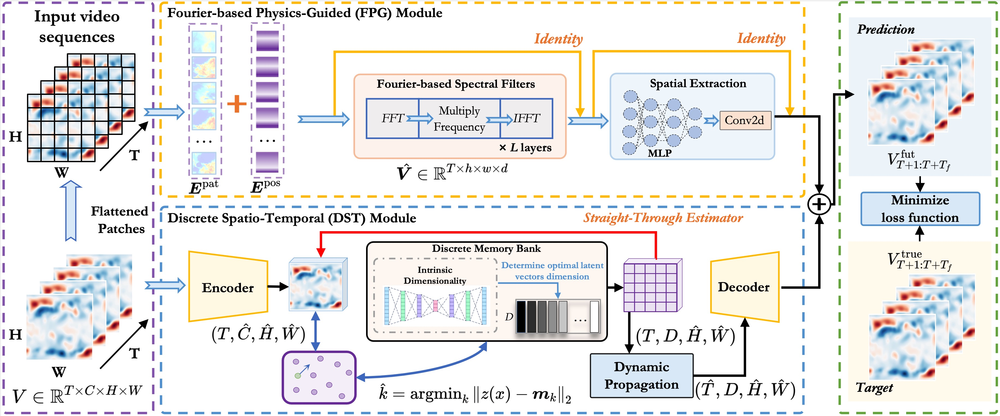
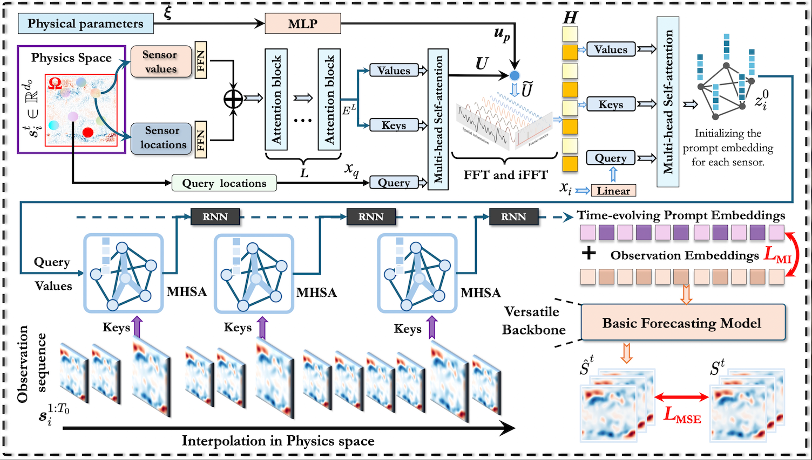
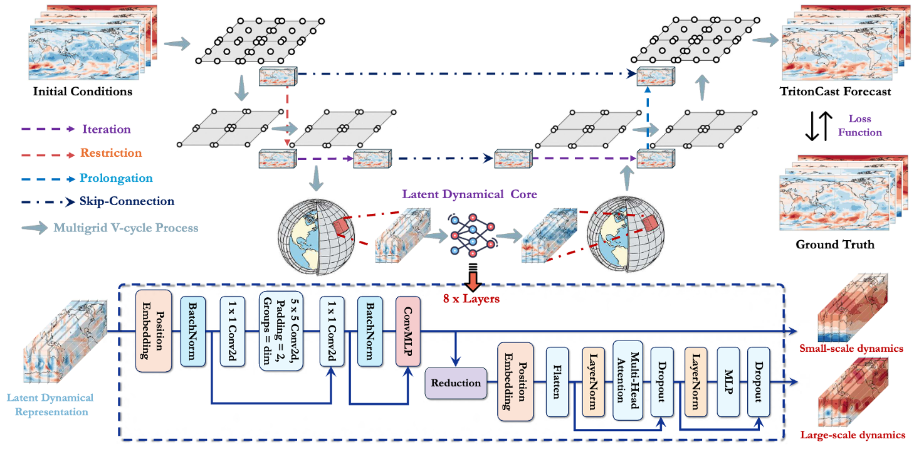
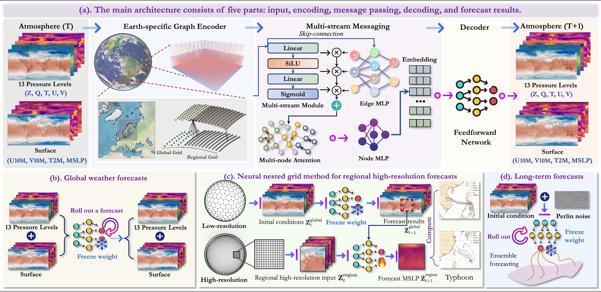

Roboalign R1
Combine reward-aligned post-training with stabilized long-horizon inference for robot video world models
Representative workResearch
Our work is organized around a small number of core directions, each grounded in concrete problems, practical systems, and representative projects.
Theme 01
We study world models that can build persistent internal representations of environments, anticipate future states, and support long-horizon reasoning. Our goal is to connect perception, memory, prediction, and decision making in systems that are more general, adaptive, and useful in open-ended tasks.
Combine reward-aligned post-training with stabilized long-horizon inference for robot video world models
Representative workInvestigate the problem of hallucination within video generation world model.
Representative workTheme 02
We develop models and data mining methods for structured data that evolve over space and time, including urban systems, mobility, climate, and sensor networks. We care about forecasting, representation learning, anomaly discovery, and interpretable pattern extraction.

Investigate the challenge of spatio-temporal video prediction, which involves generating future videos based on historical data streams.
Representative work
Study the problem of out-of-distribution fluid dynamics modeling.
Representative workTheme 03
We build machine learning systems for scientific problems where physical structure, domain knowledge, and reliability matter. Our work spans neural operators, surrogate modeling, scientific foundation models, and methods that bridge data-driven learning with mechanistic understanding.

Accelerate discovery in climate and Earth system science, enabling more reliable long-term forecasting and deeper insights into complex geophysical dynamics.
Representative work
Construct a multi-scale graph structure and densify the target region to capture local high-frequency features.
Representative work